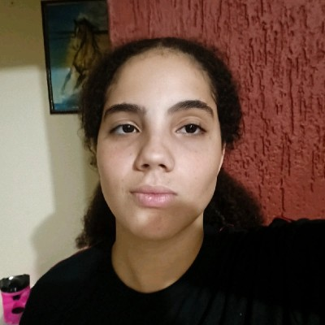

>Sou de Bauru, interior de SP, e descobri minha paixão pela tecnologia no final do ensino médio. Venho de uma base técnica, tendo estudado no SESI e concluído o curso de Eletromecânica no SENAI, experiências que me deram o empurrão certo para a área de exatas.
Atualmente, estou mergulhado no curso de Análise e Desenvolvimento de Sistemas. Este é o meu primeiro ano na faculdade e estou aproveitando para explorar tudo o que a TI oferece.
Meus interesses atuais são amplos: estou curtindo aprender desde o desenvolvimento web e linguagens de programação até a estrutura de bancos de dados. Meu objetivo é absorver o máximo de conhecimento para construir soluções incríveis!
Como estou no início da graduação em ADS, meu foco principal é construir uma base sólida. Espero dominar as principais linguagens de programação e entender a fundo como criar sistemas que facilitem o dia a dia das pessoas.
No futuro, pretendo me especializar em uma das áreas que estou explorando agora, buscando oportunidades de estágio onde eu possa aplicar na prática o que estudo na faculdade e continuar evoluindo como profissional de tecnologia.